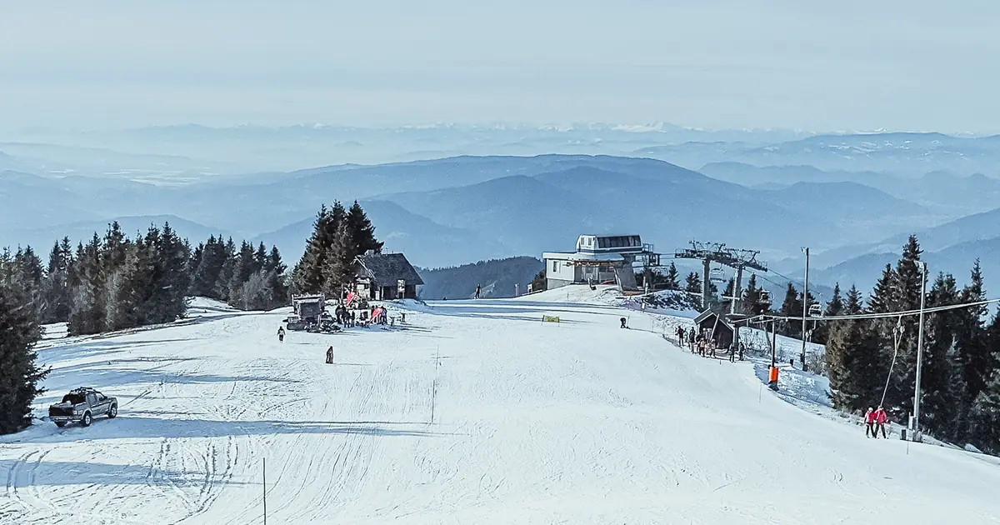
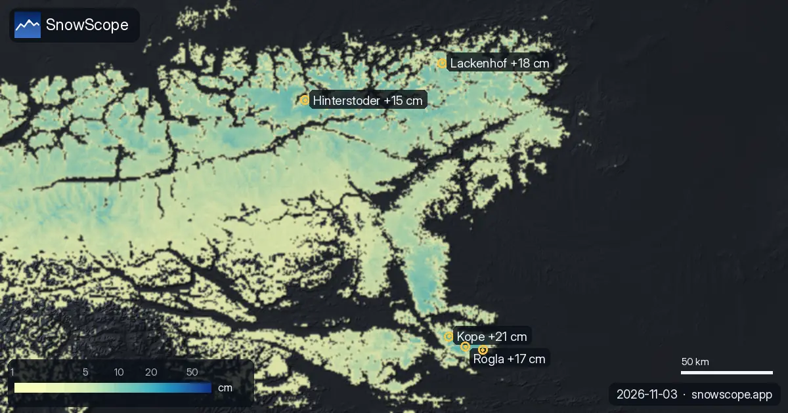

Freezing level 2980 m: Rain on Kope's new snow
The freezing level will reach 2980 m on November 6, rising well above Kope's summit at 1535 m. This means rain will fall on the 21 cm of snow that accumulated over the past three days, consolidating the pack and releasing water that flows directly to mountain rivers rather than storing slowly through winter.
See the live snow forecast for Kope in the SnowScope appSnow depth, powder alerts and the 3D map, free.
Three days of snow build the base
Between November 1 and 3, Kope received 21 cm of new snow. Most came November 1 (18 cm), with just 3 cm on November 2-3 combined.
Our snow model shows 11 cm sitting on the upper slopes at 1535 m now, meaning about 10 cm has already settled and compacted. Measured data from nearby stations support the pattern: Schönbüel at 1777 m recorded 11 cm new snow on November 2, and Plattkopf at 2220 m shows 30 cm total depth, confirming that early-season snow fell widely across the region at higher elevations.
| Resort | Snow depth | New snow, 72 h | Coming, next days | Top |
|---|---|---|---|---|
| Kope | 11 cm | 21 cm | 2 cm | 1,535 m |
| Lackenhof | 10 cm | 18 cm | 0 cm | 1,431 m |
| Rogla | 8 cm | 17 cm | 3 cm | 1,511 m |
| Trije Kralji | 10 cm | 17 cm | 2 cm | 1,337 m |
| Hinterstoder | 12 cm | 15 cm | 0 cm | 1,987 m |

The freezing level climbs fast
The water issue begins with temperature. Today (November 3), the freezing level at Kope sits between 1170 and 1220 m. By November 6, it peaks at 2810-2980 m—well above the summit at 1535 m. At that peak, everything gets rain instead of snow.
Rain consolidates fresh snow in hours
Fresh snow from November 1 is loosely settled, full of air spaces. When rain falls into it, water drains downward quickly and melts more snow than the rain alone, releasing stored water much faster than slow winter melt would.
The 11 cm on the upper slopes will densify and compact in hours, not weeks, changing how much water stays stored in the mountains and how much flows immediately to rivers.
Where the water flows
At Kope's base (705 m), no snow remains—rain drains to streams immediately. At mid-slopes (1120 m), there is almost no snow either (1 cm by our model). At the summit (1535 m), the 11 cm will consolidate and produce runoff that feeds mountain rivers with an early pulse of water.
For water managers tracking reservoir levels, this is a supply event arriving faster than expected for November.
The brief window before consolidation
Two more centimetres of snow are forecast for November 4 before the rain arrives. After that, the forecast is dry, so the consolidation event is brief. The 11 cm that remains will continue settling and compacting into denser snow as early-season packs change fast.
Data and uncertainty
Our snow model estimates 11 cm on the upper slopes based on snowfall patterns from November 1-3, with the normal uncertainty of early-season snow on complex terrain. Satellite imagery cannot confirm this due to cloud cover.
The nearest weather station (Mariazell at 864 m) recorded zero snow by November 2, which is correct for that elevation. Early-season data is often patchy, so we watch closely how consolidation unfolds on November 6.
Tips for skiers
- Plan your powder day for November 4-5. Rain on November 6 will consolidate the fresh snow into wet, heavy slush within hours.
- The snow is thin—just 11 cm on the upper slopes, zero cm at the base. Watch for buried rocks and exposed terrain on lower slopes.
- Seek the summit slopes on November 5. The freezing level climbs from 1170 m today to 2980 m on November 6, so higher altitude stays in snow longest.
- After rain consolidates the pack on November 6, water will drain quickly off low elevations where there is no snow. Upper slopes will stay wet for days as water slowly moves through the settled pack.
About these numbers
Resort snow depths are the deepest snow on the resort's upper slopes from the SnowScope snow model (about 1 km, run of 3 November); they are estimates for an area, not a measurement at one point. Station values are measurements on the date shown. Forecasts can change. Always read the official avalanche bulletin before going off-piste.
Official avalanche bulletins: EAWS (Alps)
Cite this report
For research, teaching or the press: the numbers and charts are free to reuse under CC BY 4.0 with this citation.
SnowScope (2026), Freezing level 2980 m: Rain on Kope's new snow, https://snowscope.app/blog/en/2026/11/alps-fresh-snow-powder-alert-3-november-2026.html, accessed 2026-11-03
SnowScope (Atlas Labs). (2026, November 3). Freezing level 2980 m: Rain on Kope's new snow. SnowScope snow reports. https://snowscope.app/blog/en/2026/11/alps-fresh-snow-powder-alert-3-november-2026.html
BibTeX
@misc{snowscope2026alpsfreshsnowpowderalert,
author = {{SnowScope (Atlas Labs)}},
title = {Freezing level 2980 m: Rain on Kope's new snow},
year = {2026},
month = nov,
howpublished = {\url{https://snowscope.app/blog/en/2026/11/alps-fresh-snow-powder-alert-3-november-2026.html}},
note = {Published 2026-11-03 16:31 UTC; accessed 2026-11-03}
}· CC BY 4.0 · Methods, data and tools →
Kope: snow and temperature by height, this winter vs last (tools) →
Follow Kope
Free: a message when fresh snow is coming, and the forecast every morning.
More snow reports

When to book Courchevel and the 3 Vallées, which village to stay in and where the snow lasts, planned from 46 past winters of snow data.

Cortina d'Ampezzo three ways: Tofana, Faloria-Cristallo and Cinque Torri-Lagazuoi, with 46 winters of snow data at three heights.

How to spend a first day skiing in Chamonix, from the Grands Montets above Argentière to the right hour for each slope, with 46 winters of snow data.